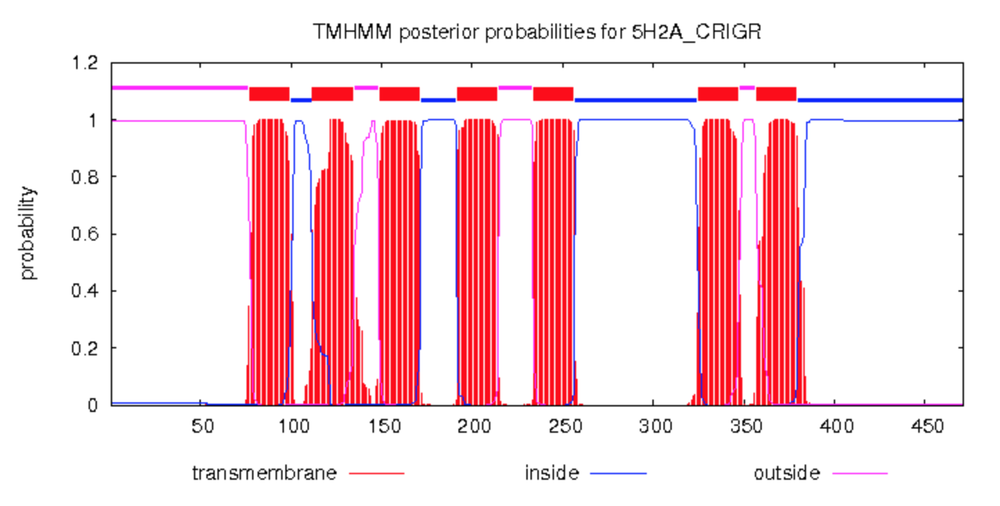
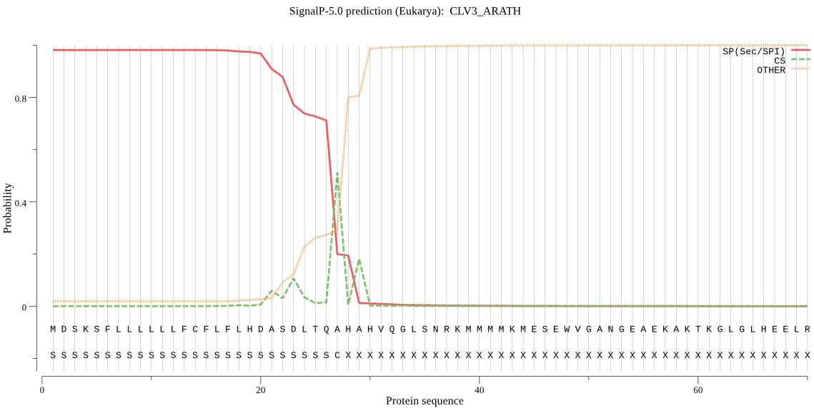

Day 4 - Transcriptome Annotation
Bastian Schiffthaler, Nicolas Delhomme
Overview
- Relating Sequence to Function
- Which tools to use
Relating Sequence to Function
>NODE_2283_length_573_cov_2.036680_g2196_i0
AATGGCTTCAGCAGACGTAGGTGCAATCAGGTTCTCTCATTCTGCGCCTCTGACTCCTTC
AAGGTCTCATTCGCCTCTGGGCTTTATAAGAACAGGCAGCAGGACCTCCAGGAGAACATG
TGCAATATGTCTTGATGCAATGAAACCAGGCCATGGTCATGCCTTATTTACTGCAGAGTG
TTCCCACACTTTCCACTTTGCTTGCATTGCTTCCAATGTGAAGCATGGAAATAGGGTATG
TCCAGTTTGTCGAGCCAAGTGGAAAGAAGTTCCCTTACAAGGGCCTCTTTCAGAACCACT
GCGTTGCAGAGCACGAATAAGTCCCTTGGATTGGCCACAACAGCAAGATGGCTGGACAAC
GATTTTACCCCGTTTGCCACCTTCTCGTCCCCCACATCCTGAAGCTGCAAGACGTGTTAC
AGAGCCTTCTGTTTTTGCTGATGATGAGCCATTGGAGCATCGGTCAAGTGGAGAAAACAG
GTCAGGGGAAGAAAATGGAAATGAACCTACTTTGGTTGAAGTTGAGATAGCAGCAGGAAA
TTCACAGGCTACAGTTTCGAGAGGAGAATTGGC
What gene is this?
How would you find out?
Sequence Homology
Search database for similar sequence. BLAST/DIAMOND
Sequence Composition
Find parts of your sequence with "known" functions
Annotation usually works in protein space, so let's find ORFs and translate
- ORFFinder: Find all ORfs
- TransDecoder: Find likely coding regions
>lcl|ORF2
MASADVGAIRFSHSAPLTPSRSHSPLGFIRTGSRTSRRTCAICLDAMKPG
HGHALFTAECSHTFHFACIASNVKHGNRVCPVCRAKWKEVPLQGPLSEPL
RCRARISPLDWPQQQDGWTTILPRLPPSRPPHPEAARRVTEPSVFADDEP
LEHRSSGENRSGEENGNEPTLVEVEIAAGNSQATVSRGEL
Did we find one? Cool! Let's search DBs for it
Popular DBs:
What else?

TMHMM
SignalP
High throughput versions of this?
EggNog example:
# Subset
share/Day4/software/subset.py \
share/Day3/writable/bastian/139/assemblies/139.ORP.fasta 15
# Annotate
python2 share/Day4/software/eggnog-mapper/emapper.py \
-o 139 --translate -i \
share/Day3/writable/bastian/139/assemblies/139.ORP.fasta \
-m diamond